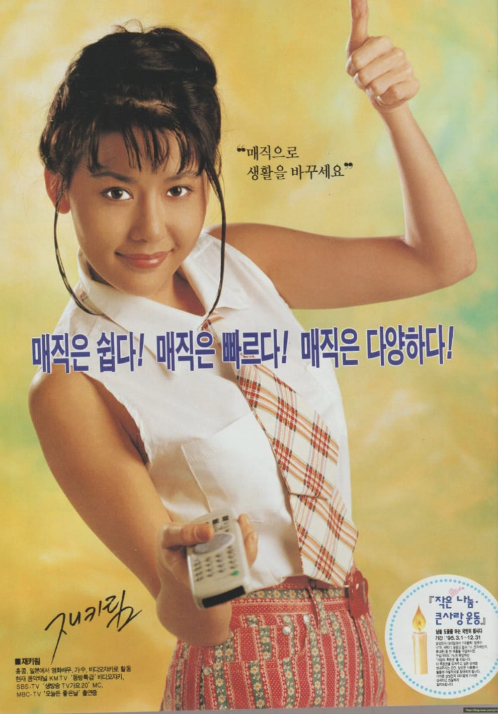

재키림
매직은 쉽다!매직은 빠르다!
매직은 다양하다!


매직은 쉽다!매직은 빠르다!
매직은 다양하다!
재키림은 대한민국의 방송인 겸 VJ로, 미국·홍콩·스위스·일본 등에서 성장하며 국제적인 감각과 뛰어난 외국어 실력을 갖춘 인물이다. 1990년대 중반 KMTV VJ로 활동하며 젊은 세대의 큰 인기를 얻었고, 세련되고 글로벌한 이미지로 다양한 방송과 광고에 출연하였다.
삼성 매직폰은 1990년대 중반 출시된 휴대전화 제품으로, 사용 편의성과 다양한 기능을 강조한 이동통신 기기였다. 휴대전화 보급이 빠르게 확대되던 시기에 출시되어 첨단 기술과 실용성을 동시에 갖춘 제품으로 주목받았다.
광고는 "매직은 쉽다, 빠르다, 다양하다"라는 메시지를 통해 제품의 편리한 기능과 혁신성을 강조했다. 재키림의 세련되고 국제적인 이미지는 첨단 전자제품의 미래지향적 이미지를 전달하는 데 효과적이었으며, 젊은 소비자들에게 강한 인상을 남겼다.
1990년대 중반은 이동통신 시장이 빠르게 성장하던 시기였다. 기업들은 첨단 기술 제품을 소개하기 위해 젊고 세련된 이미지를 가진 방송인과 연예인을 적극 기용했으며, 광고를 통해 새로운 디지털 라이프스타일을 제시했다. 재키림은 당시 글로벌 감각을 상징하는 스타로서 이러한 광고 트렌드를 잘 보여주는 인물이었다.